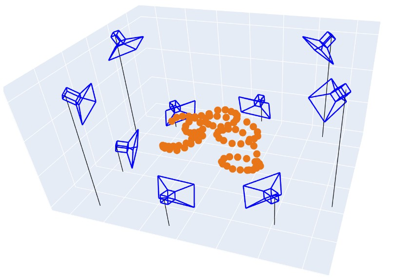
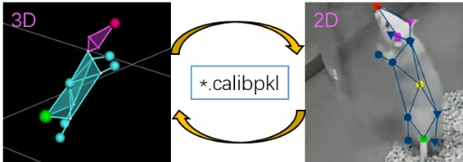

小球矫正概述
参考 "安装示例代码 > 游乐场"，运行完整代码。
视频: 多相机小球外参矫正
使用小球开发的小球标定流程，实现了快速精准的多相机标定。详细内容也可以参考 multiview_ball_calib。这里只介绍大致的流程。


为什么需要用小球来标定
多相机外参的计算（位置和旋转角度）对于建立准确的三维坐标模型是必需的。传统的棋盘外参标定方法要求多个相机能够同时拍摄到棋盘的正面图案，但在环绕式多相机配置中，存在视角限制。因此棋盘的应用效率较低，而使用小球的效率更高。
具体的标定流程请参考下一章节。